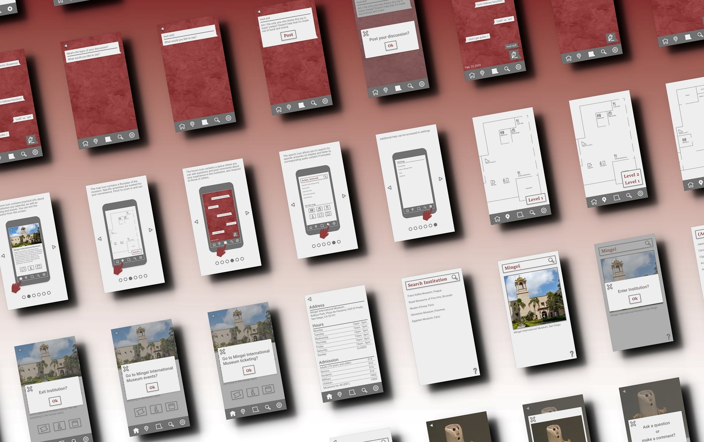

The Salon
◼ A universal museum companion app.
◼ 2021
Challenge
Typically, visitors must download a different app for each museum they visit. Many of these apps are unofficial, poorly made and rife with paywalls. I wanted to create a museum companion app that could be used in any institution while meeting the specific needs of each institution.

Research
I made a benchmark of 10 existing museum apps, as well as a competitive analysis of the features of each. In addition, I conducted qualitative interviews with 3 professional artists, 2 curators, and 5 museum visitors, as well as supplemental research about visitor habits, tendencies, and desires. During this research, the need for communication and understanding emerged as a theme so I integrated a forum into the functionality of the app along with the other key features identified in the competitive analysis.
Ideation
I developed personas and storyboards to help specify how the app would be integrated into the museum visit depending on the different needs of visitors. I also made a basic navigation architecture and wire frames as the preliminary steps for developing the user interface.
Process
I used Adobe XD to create the high-fidelity interactive prototype. This prototype was user-tested to identify pain points in design and navigation and then adjusted accordingly. I selected the color scheme and font according to WCAG 2.0 accessibility guidelines.
Result
The final prototype was packaged for development with all necessary design documentation. The prototype is available at this link: https://xd.adobe.com/view/3e2f20a9-b70f-44a9-b7c7-7d2a9cd76605-6b7c/

black diamond conversions
hangzhou archives
hamartia
nest coffin
back to top